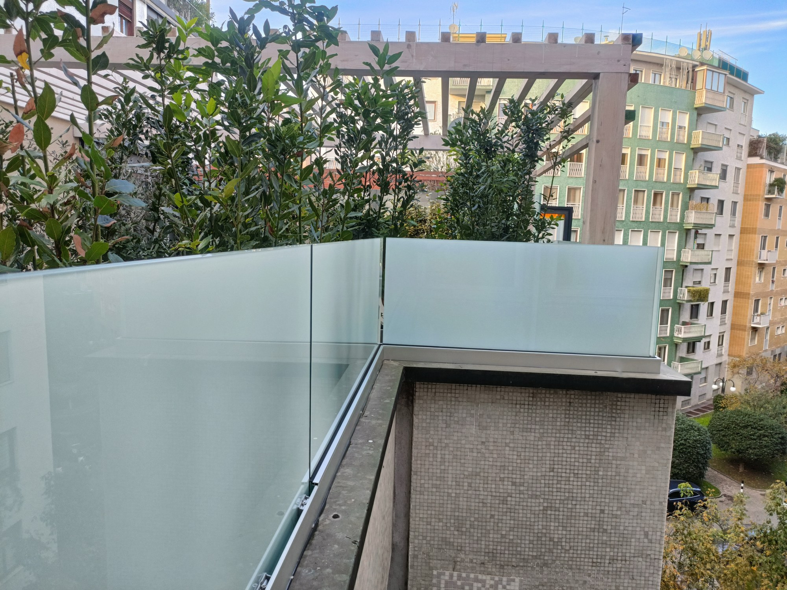
Oltre 30 anni di esperienza artigianale e impianti CNC ad alta precisione. Produzioni seriali per aziende e pezzi unici sartoriali per residenze ed architetti.
Vetreria Giussanese srl propone all’attenzione dei suoi clienti privati e professionali la trentennale esperienza di esperti artigiani nella lavorazione del vetro piano nel cuore produttivo della Brianza.
La nostra solida esperienza nel campo dell’arredamento ci consente di soddisfare le più svariate richieste e, grazie alla nostra dimensione artigiana unita a moderni macchinari, siamo estremamente flessibili e veloci nella fornitura di intere commesse.
Vetreria Giussanese da sempre seleziona la qualità e la provenienza di tutte le materie prime utilizzate nelle sue produzioni per garantire sempre un manufatto di eccellenza durevole nel tempo.
Materie prime di prima scelta, vetri Saint-Gobain e AGC con conformità UNI EN.
Tempi di consegna certi e rapidità di risposta sia su prototipi che su grandi commesse.
Stratificazioni, tempera certificata e pellicole antiframmentazione per ogni uso.
Banchi taglio CNC, foratura verticale e molatura bilaterale per finiture impeccabili.
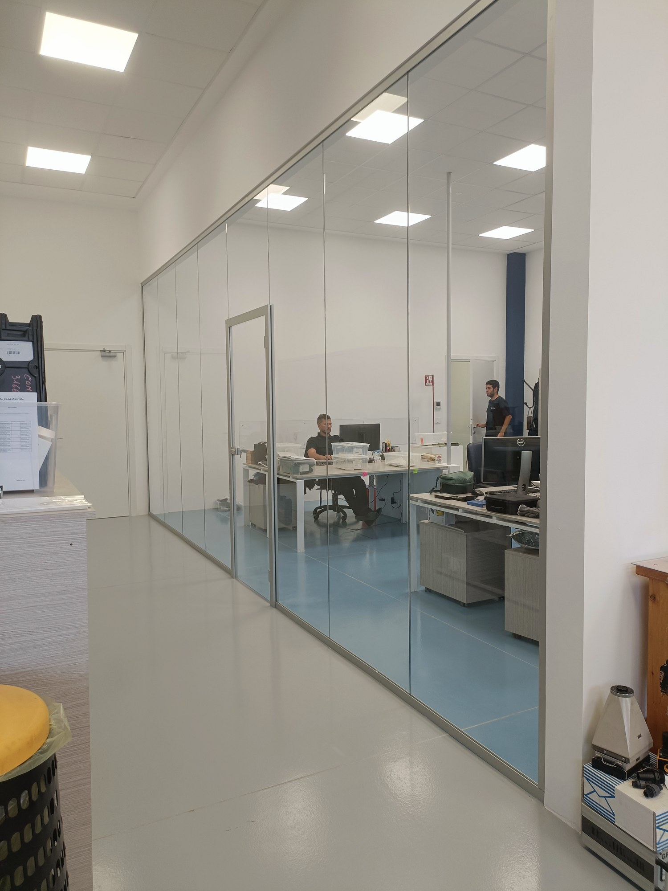
Che si tratti di grandi commesse industriali seriali per brand dell'arredamento o di realizzazioni sartoriali e uniche per la casa, garantiamo standard di eccellenza.
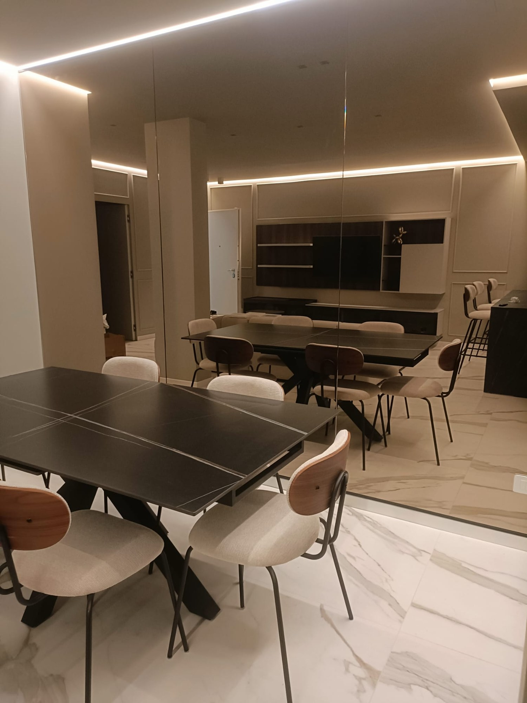
Collaborazioni industriali con aziende di arredamento, contract, farmaceutico e retail. Gestione di volumi importanti con puntualità e ripetibilità millimetrica.
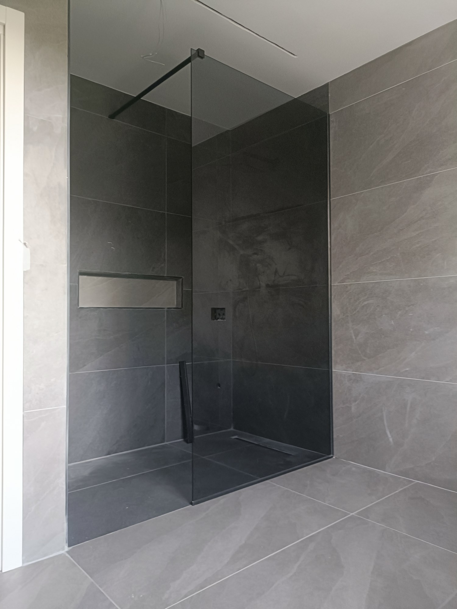
Progetti su misura per la casa, ville e spazi commerciali di pregio. Box doccia sartoriali, pareti a specchio, parapetti panoramici, pensiline e chiusure esclusive.
Collaboriamo da anni con aziende leader del settore arredamento in Brianza e in tutta la Lombardia. La nostra capacità produttiva e l'assetto tecnologico ci consentono di gestire commesse seriali di grandi dimensioni con puntualità rigorosa e costanza qualitativa.
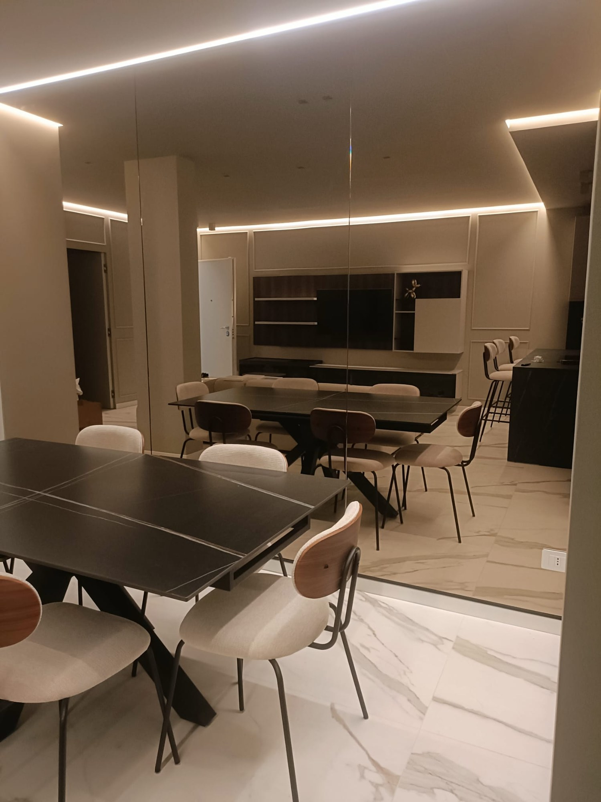
Produzione in serie di piani per tavoli, ripiani, ante per mobili, mensole e schienali. Tagli CNC ad altissima precisione e bisellature uniformi su migliaia di pezzi.
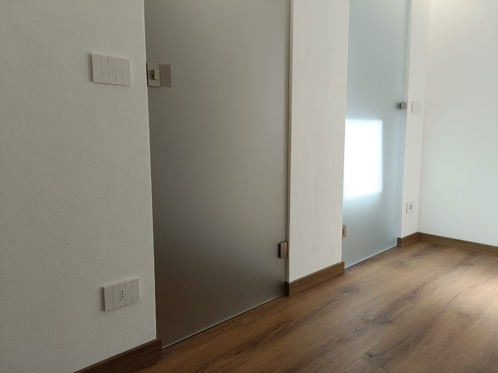
Siamo specializzati in soluzioni per arredi di farmacie e cliniche: cristalli antigraffio ad altissima resistenza chimica, superfici igieniche e vetri scrivibili per messaggi di reparto o offerte al banco.
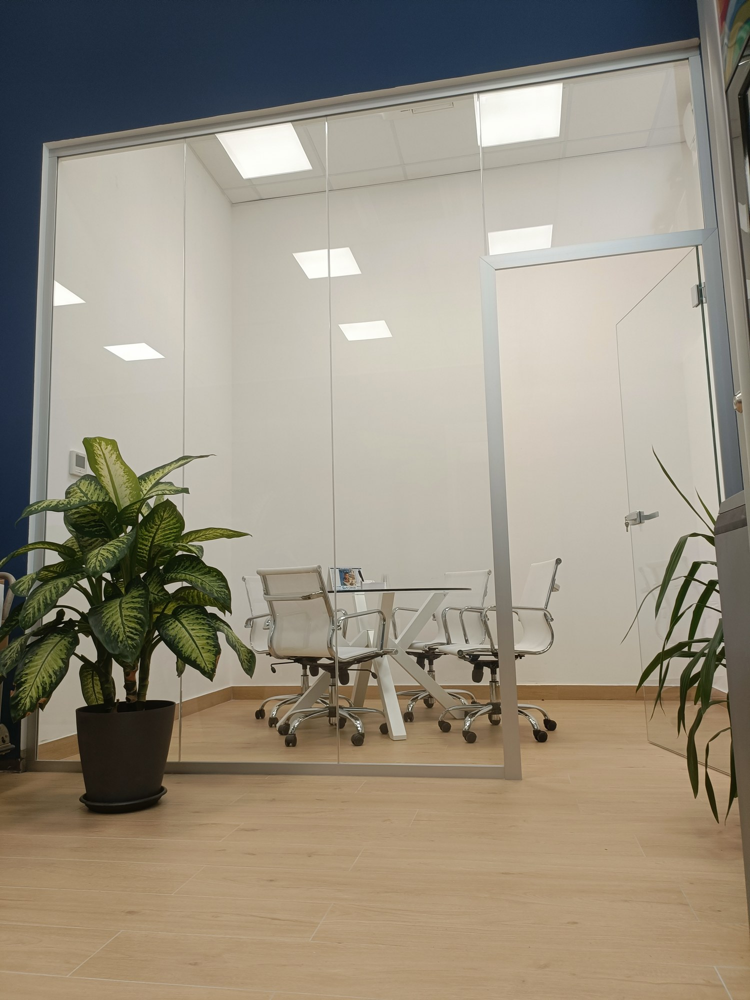
Sistemi modulari di pareti divisorie acustiche per uffici direzionali, showroom e teche espositive di alta sicurezza per negozi di lusso e gioiellerie in tutta la Lombardia.
Allo stesso tempo, siamo al servizio dei privati che cercano pezzi unici: ogni progetto viene seguito con cura artigianale dal rilievo misure alla posa, per trasformare ogni idea in una realizzazione esclusiva.
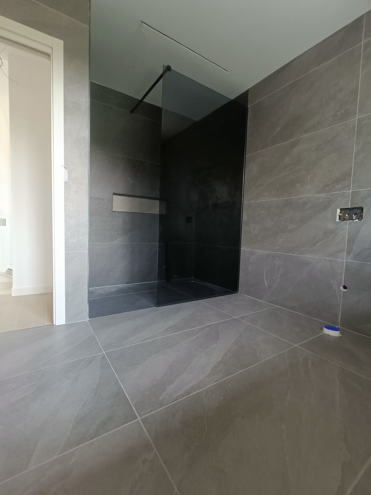
Box DocciaCristallo temperato di sicurezza 8mm o 10mm extrachiaro sagomato al millimetro. Trattamento idrorepellente anticalcare e ferramenta minimale in finitura cromo, nero opaco o ottone satinato.
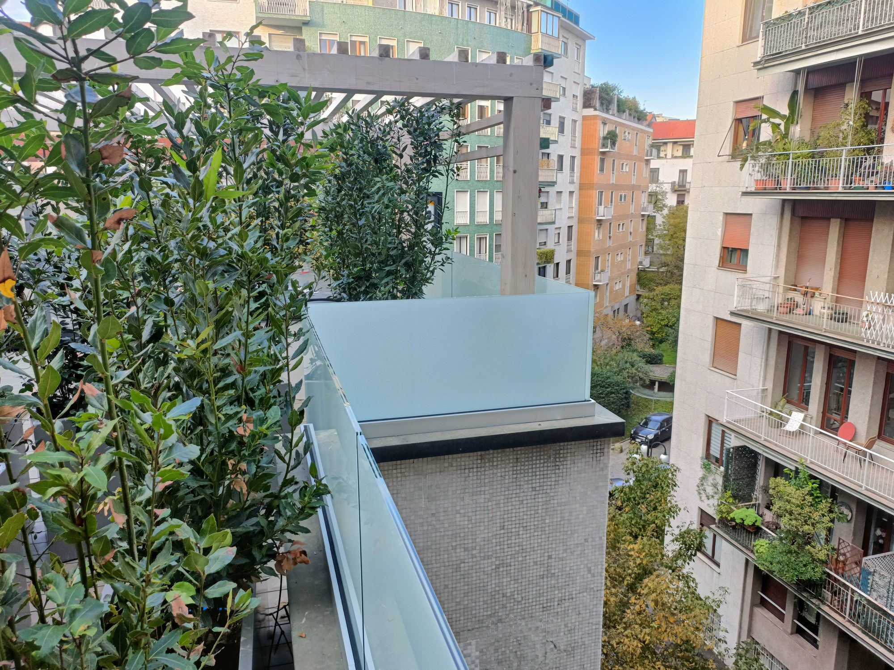
ParapettiCristalli stratificati 8+8 o 10+10 con intercalare strutturale SentryGlas o PVB bianco latte/fumé. Massima trasparenza, certificazione di spinta fino a 300 kg/m a norma di legge.
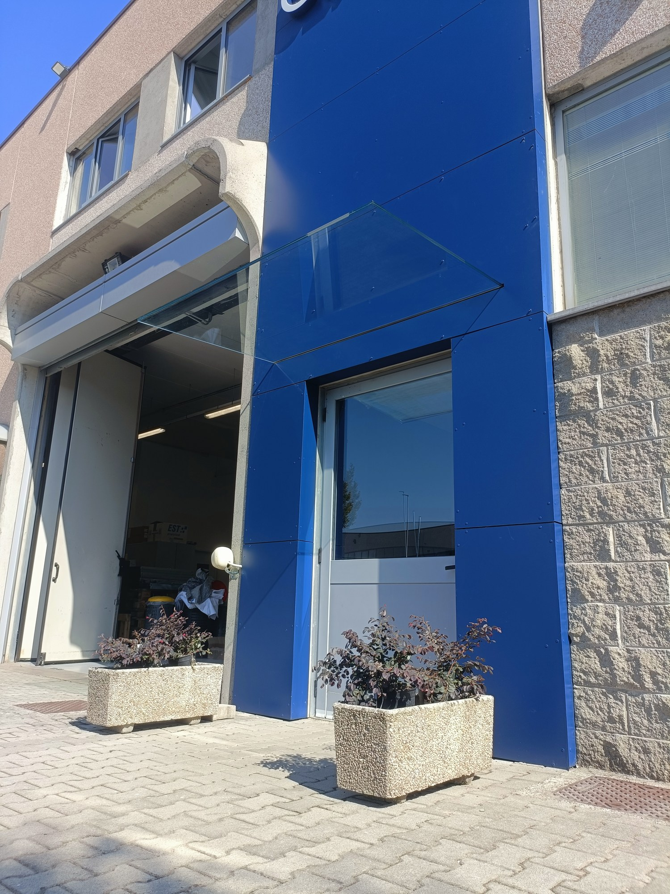
PensilineCoperture d'ingresso a sbalzo con tiranti in acciaio inox o profilo a parete a scomparsa. Resistenze verificate al carico neve e vento con vetro stratificato e temperato.
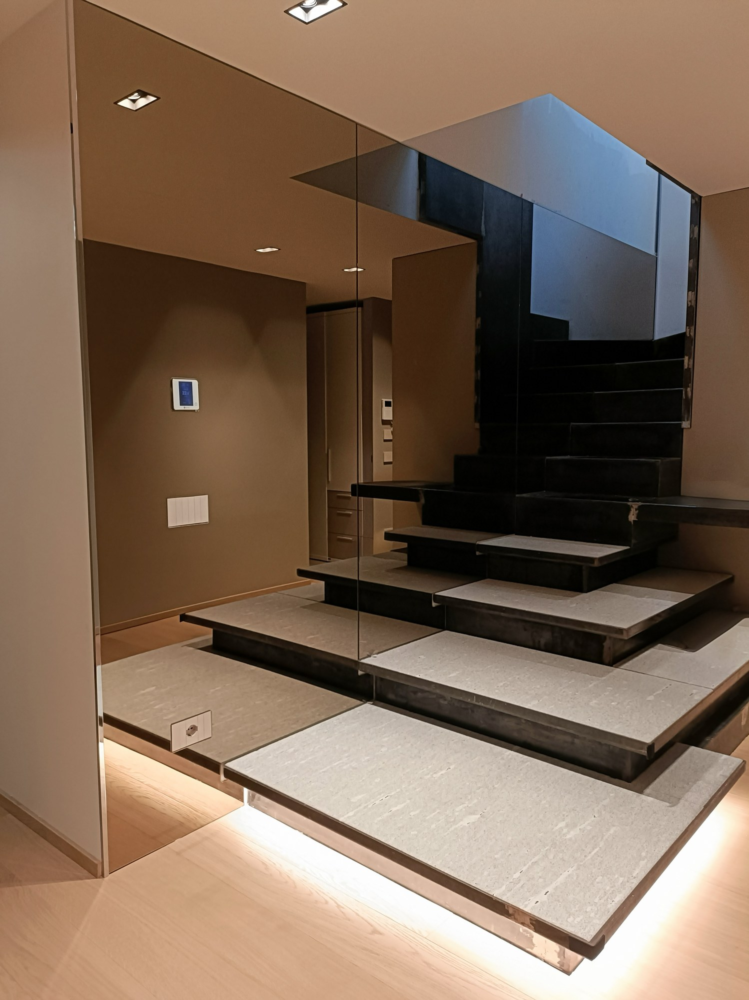
SpecchiRivestimenti scenografici per ingressi, saloni, palestre e bagni. Specchi extrachiari, bronzo o fumé con applicazione di pellicola di sicurezza posteriore antiframmentazione.
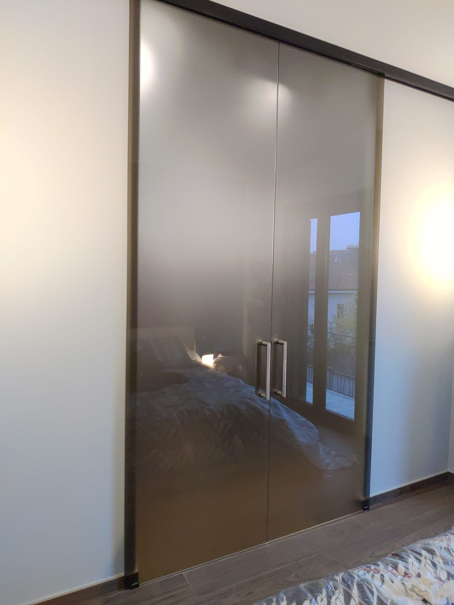
ArredoPareti scorrevoli e ante per cabine armadio in cristallo bronzo satinato o riflettente stop-sol. Garantiscono privacy, giochi di luce e un effetto estetico contemporaneo.
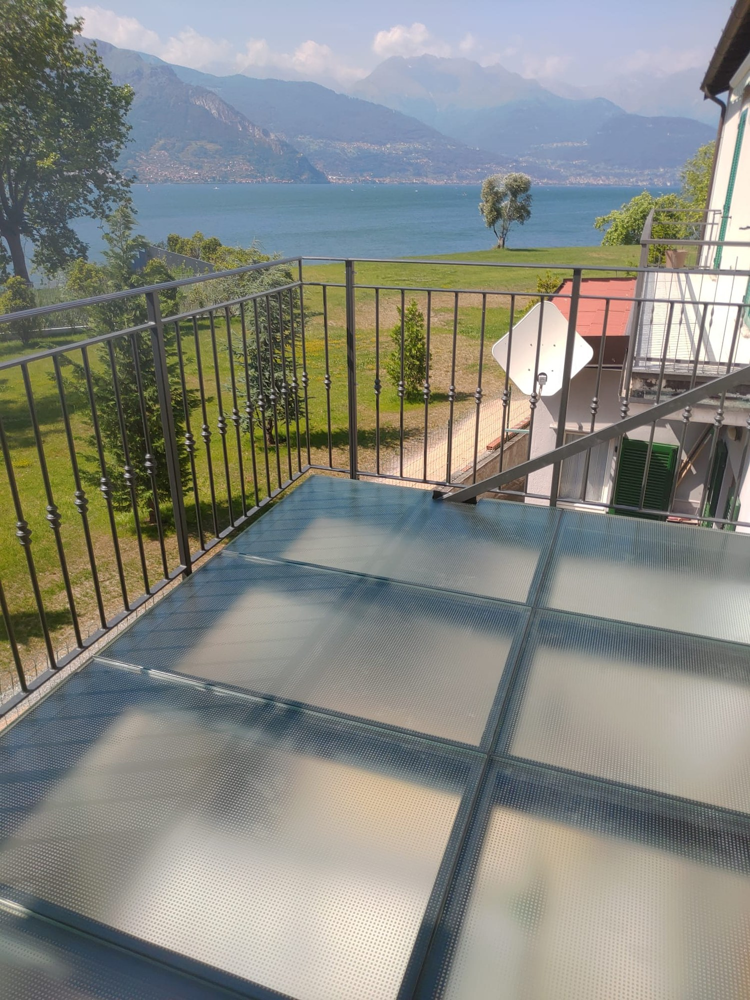
ArredoVetri calpestabili tripli stratificati di sicurezza, con trattamento superficiale serigrafato o acidato per azzerare il rischio di scivolamento e valorizzare la luce tra i piani.
Affianchiamo architetti, interior designer e ingegneri per trasformare idee complesse in dettagli costruttivi impeccabili. Uniamo la vostra visione creativa alla nostra trentennale maestria artigianale e capacità produttiva.
Un percorso strutturato in 4 fasi che garantisce trasparenza, precisione esecutiva e il pieno rispetto dei tempi concordati.
In questa fase iniziale ci confrontiamo con il cliente o l’architetto per approfondire il progetto, analizzare le esigenze estetiche, i requisiti funzionali e i vincoli tecnici di cantiere.
Presentiamo materiali, finiture e soluzioni tecniche, corredati da campioni e schede. Ogni proposta viene calibrata sul feedback per favorire decisioni ponderate e sicure.
Stimiamo tempi e costi certi con computo metrico dettagliato. Così il cliente ha una visione completa e affidabile prima di qualsiasi avvio di produzione.
Seguiamo la lavorazione CNC, il controllo qualità lastra per lastra, la consegna e offriamo supporto professionale in cantiere durante l'installazione a regola d'arte.
Il nostro parco macchinari unisce tradizione artigiana e innovazione tecnologica. Disponiamo di attrezzature moderne per tutte le principali fasi della lavorazione del vetro: banchi da taglio, centri di lavoro CNC, molatrici e impianti automatici ci permettono di garantire precisione millimetrica e qualità costante, sia per produzioni personalizzate che per grosse forniture di serie.
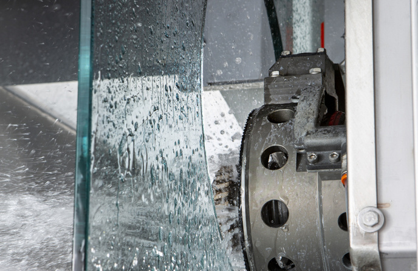
La linea di molatura e foratura sagomata a CNC realizza geometrie complesse e fori personalizzati su vetri di ogni forma. Garantisce massima precisione, ripetibilità ed efficienza per soluzioni funzionali e decorative.
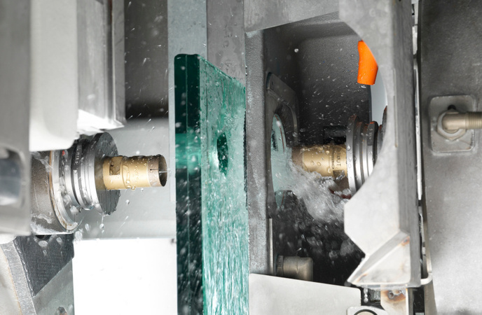
La linea di foratura verticale consente fori precisi su vetri piani di diversi spessori. Garantisce velocità, precisione assoluta e uniformità, ideale per produzioni su larga scala e cerniere doccia.
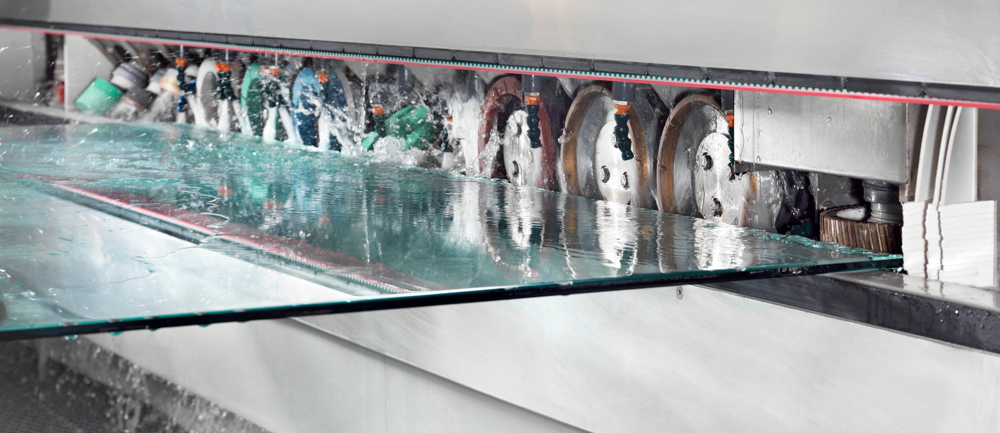
La molatrice bilaterale a CNC rifinisce contemporaneamente entrambe le superfici del vetro con precisione. Garantisce bordi uniformi a filo lucido piatto, lisci e perfettamente squadrati.
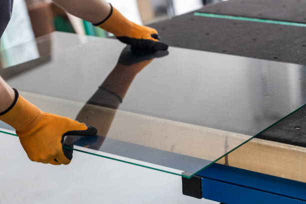
Il banco di stesura applica uniformemente film protettivi sui vetri. La pellicola di sicurezza viene applicata sul retro degli specchi garantendone l’antiframmentazione in caso di rottura accidentale.
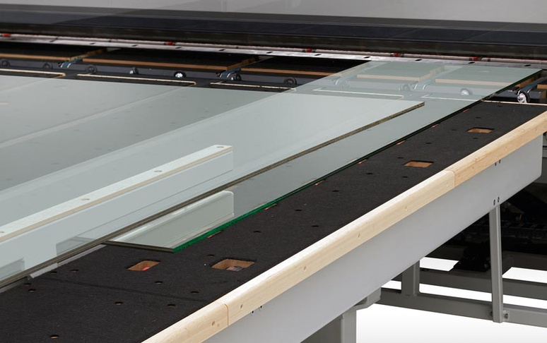
Il banco del taglio monolitico e stratificato permette di sezionare lastre jumbo singole o stratificate con precisione al decimo di millimetro. Garantisce bordi puliti fondamentali per le successive lavorazioni.
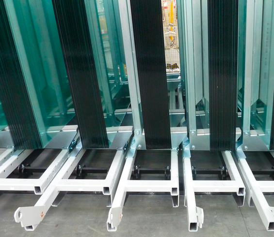
Il sistema di stoccaggio semi-automatico organizza e movimenta le casse e le lastre di vetro con la massima efficienza e sicurezza. Riduce i tempi di gestione e minimizza il rischio di micrograffi.
Dalle residenze private di Milano, Monza e Brianza, Magenta e Lecco, alle sedi aziendali. Clicca sulle immagini per ingrandirle ad alta risoluzione.
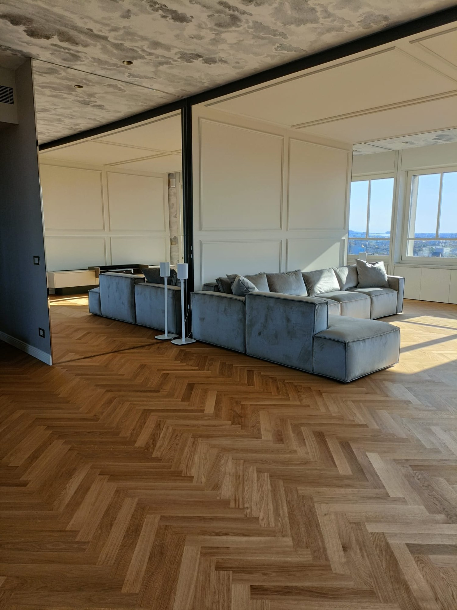
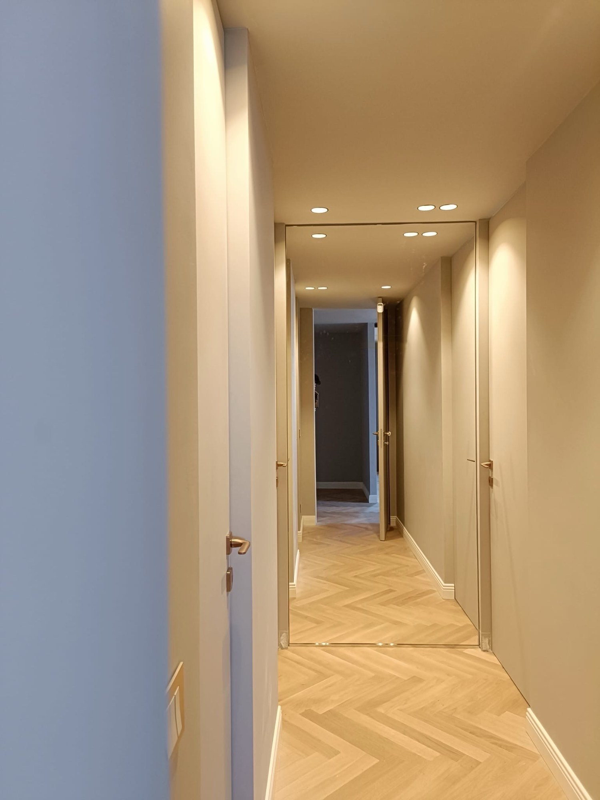
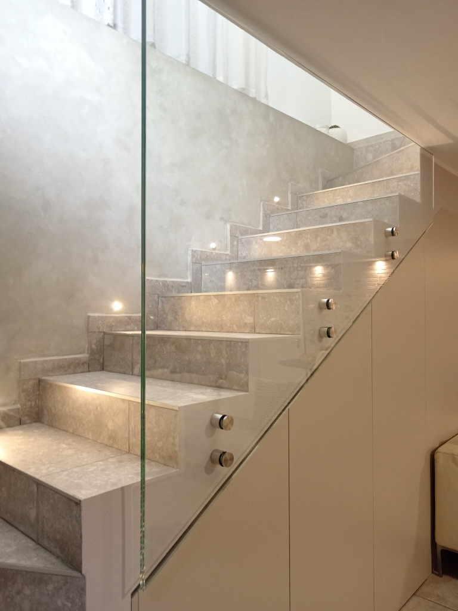
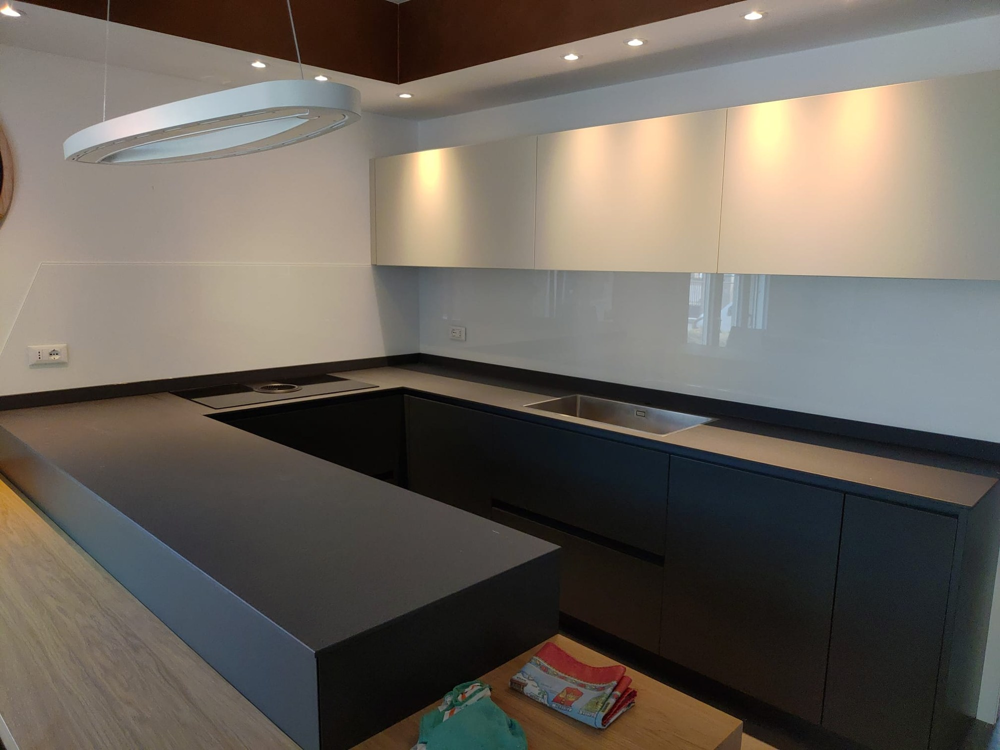
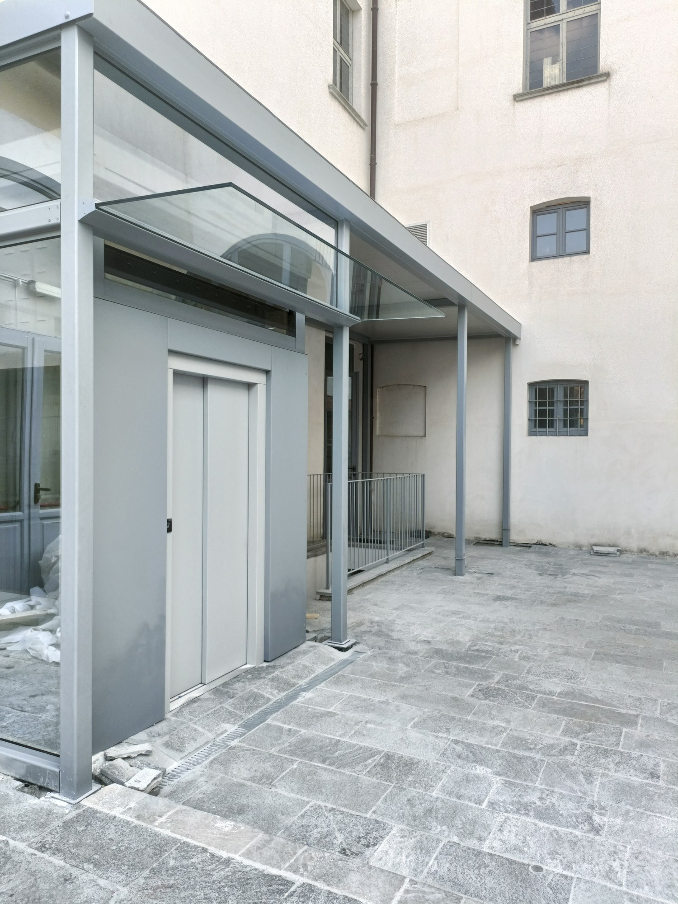
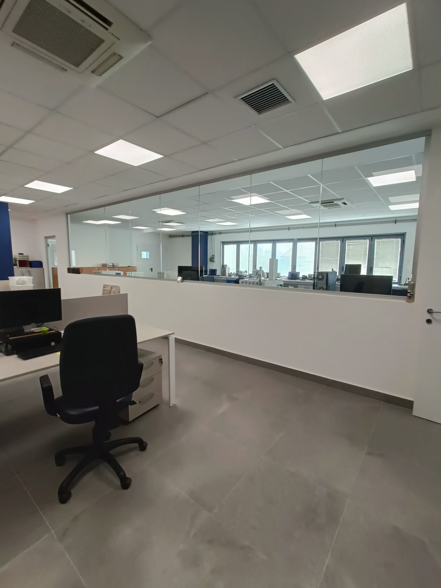
Seleziona lo scenario di tuo interesse tra i moduli dedicati (Parapetti & Pensiline, Box Doccia o Specchi su Misura) compilando le finiture e le quote desiderate.
Vieni a trovarci nel nostro stabilimento produttivo a Giussano o contattaci per qualsiasi informazione tecnica o richiesta di campionatura.
Via dell’Artigianato, 10
20833 Giussano (Monza e Brianza) • Lombardia
Ufficio: 0362 314276
Mobile: 334 8778063 (Luca)
Lunedì – Venerdì: 08:00 – 12:00 | 13:30 – 18:00
Sabato e fuori orario su appuntamento.